Week 11
Tuesday, Nov 3 · Inspiration & initial mechanism
✦ Inspiration
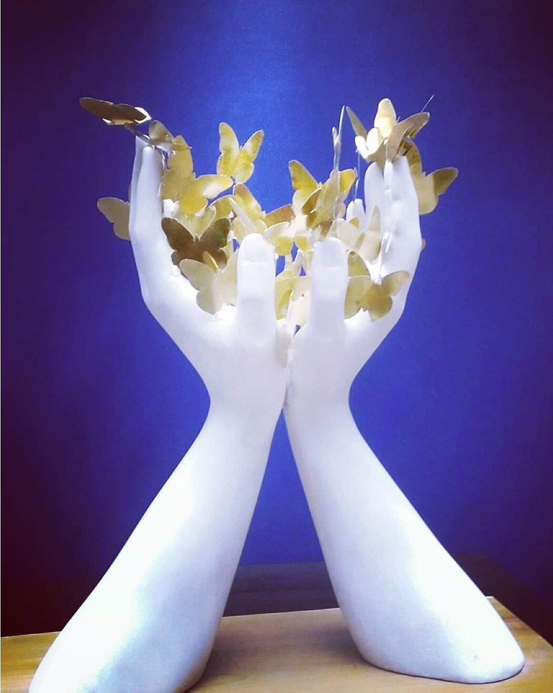
- The rotation and horizontal shift of the head.
- Or attach it to an arm or a hand.
- Keep it simple: one mechanism, repeated.
The 11.3 slides from this class teach how to design your own PCB board. I need to do the online training first.
✦ Initial sketches
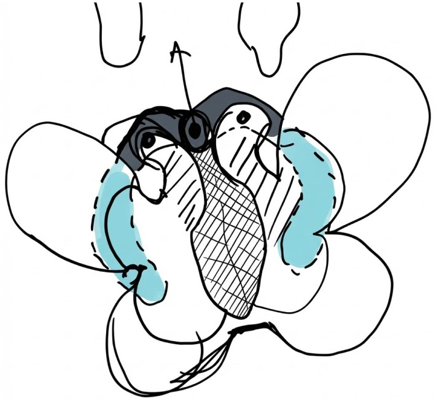
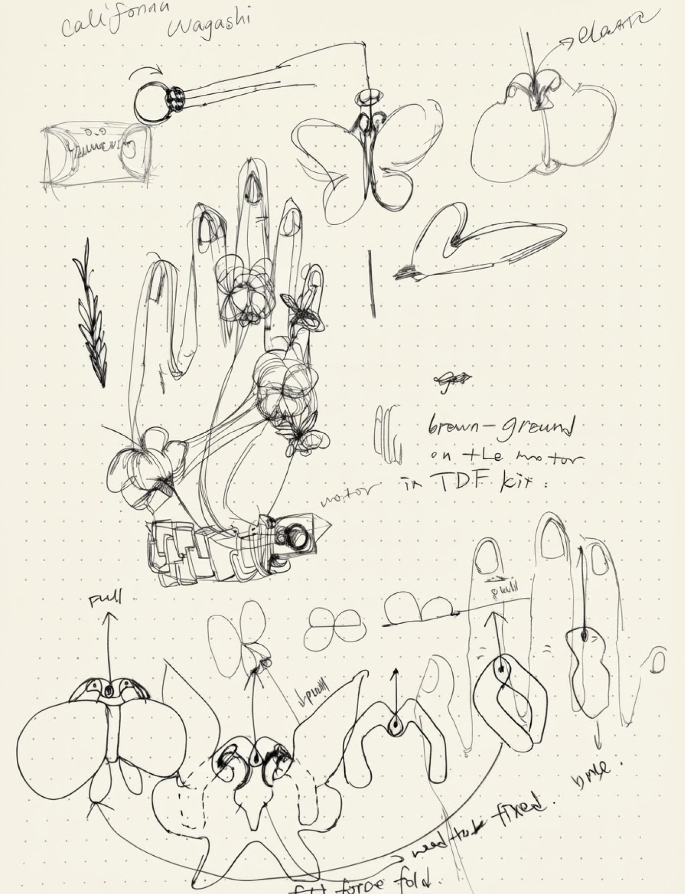
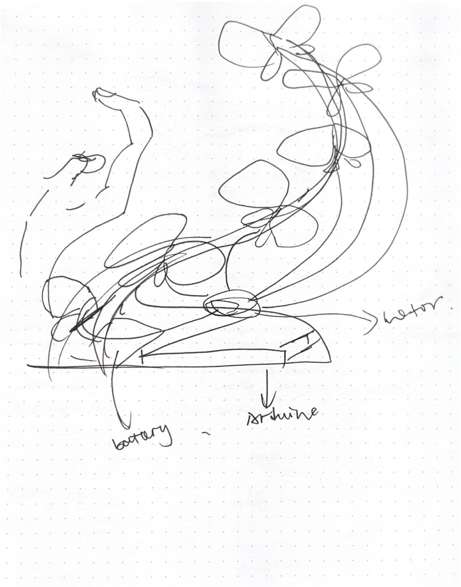
Thursday, Nov 5 · Verification & laser cutting
✦ Initial verification
Paper prototype validation.
✦ Laser cut
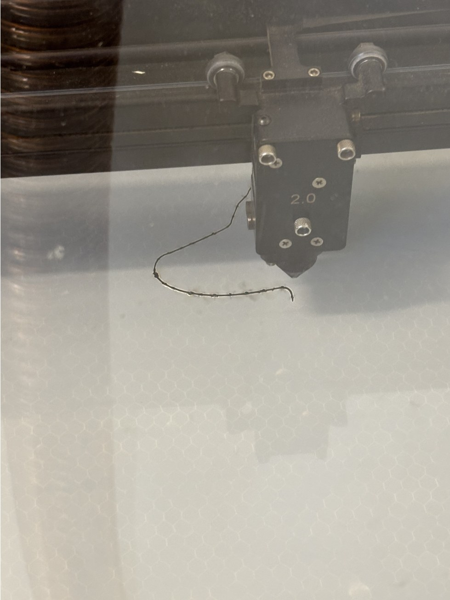
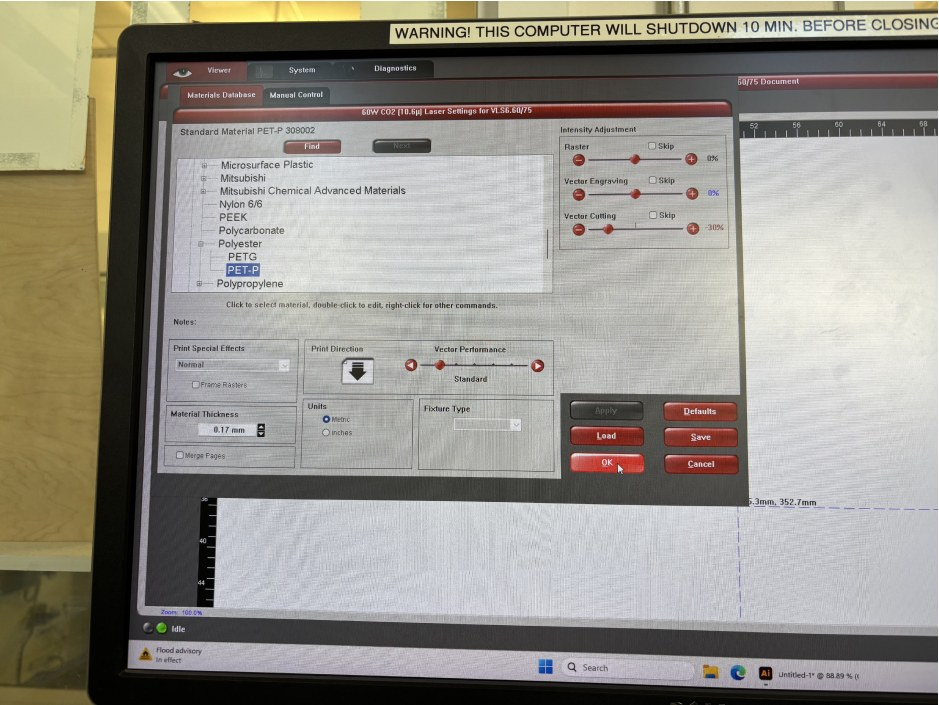
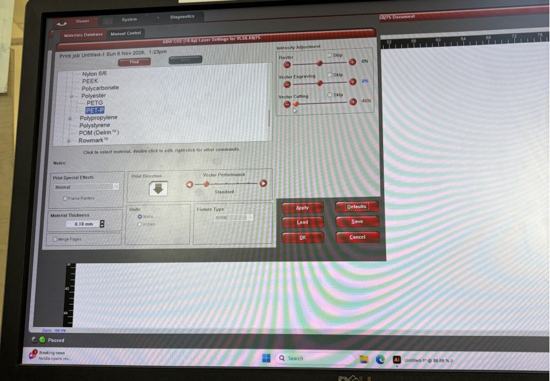
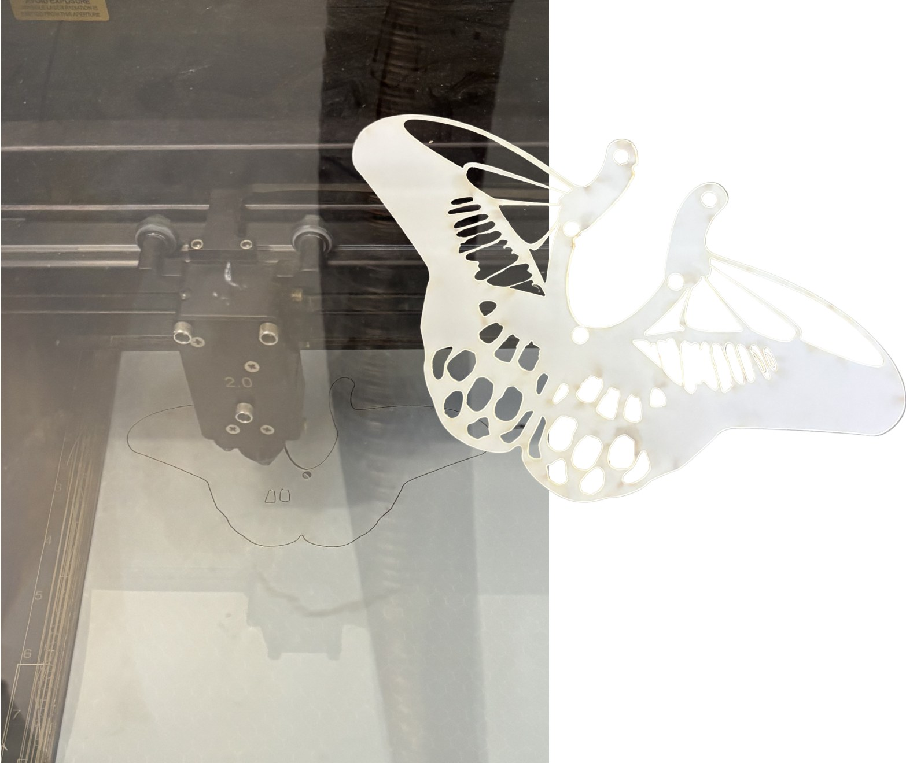
✦ Testing the mechanism
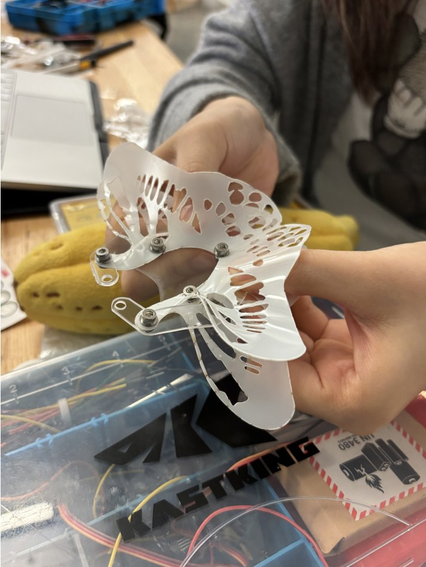
Then I started to test the mechanism on the laser cut samples.
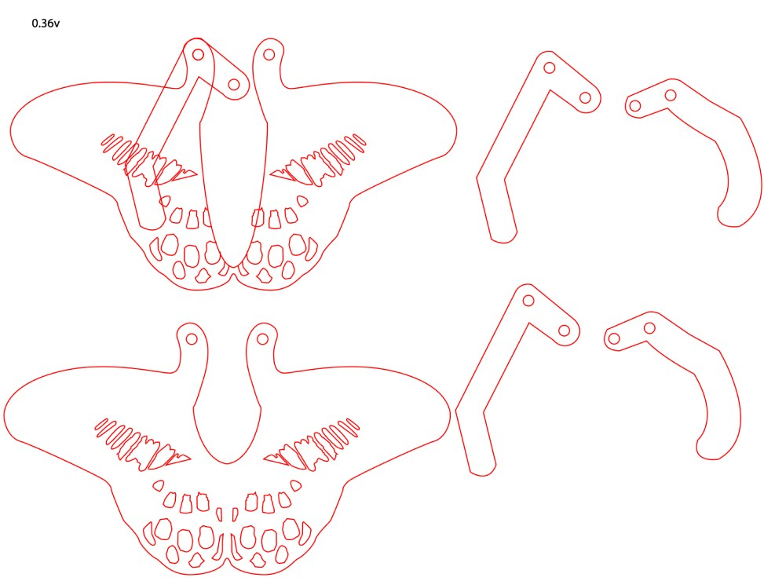
Although the acrylic lever arm matched the top gap of the butterfly in Adobe Illustrator, in reality the levers didn't fit each other very well.
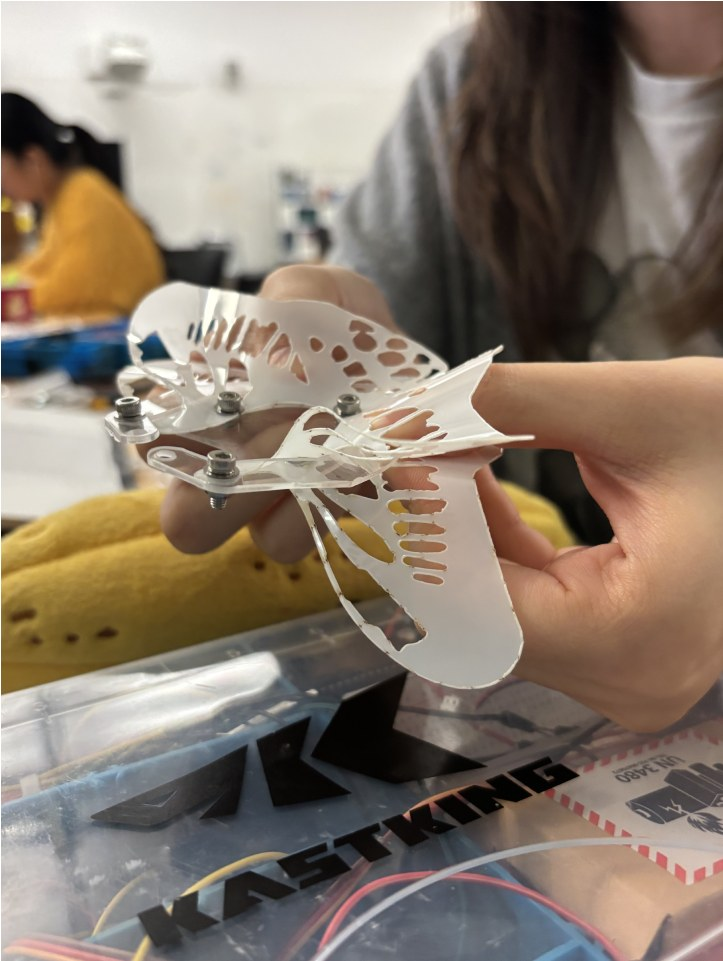
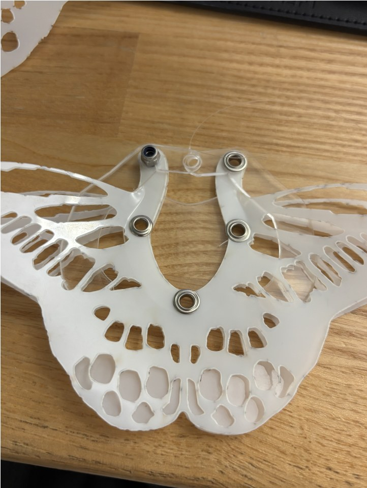
It also needed a lot of force to squeeze the wings inward, which a single thin fishing line can't do. So I started to change the mechanism.
✦ Reflection: why I changed the mechanism
- This first version was a pair of wings that fold by being pinched together.
- Pinching them closed needed a big pulling force from the fishing line, and the fishing line I could buy wasn't strong enough to support that much force.
- It also needed some fine, detailed adjustments, and at that point I felt I didn't have enough time.
- So I switched to a simpler idea for next week: split the wings apart, so a small pull on the line is enough to close them.